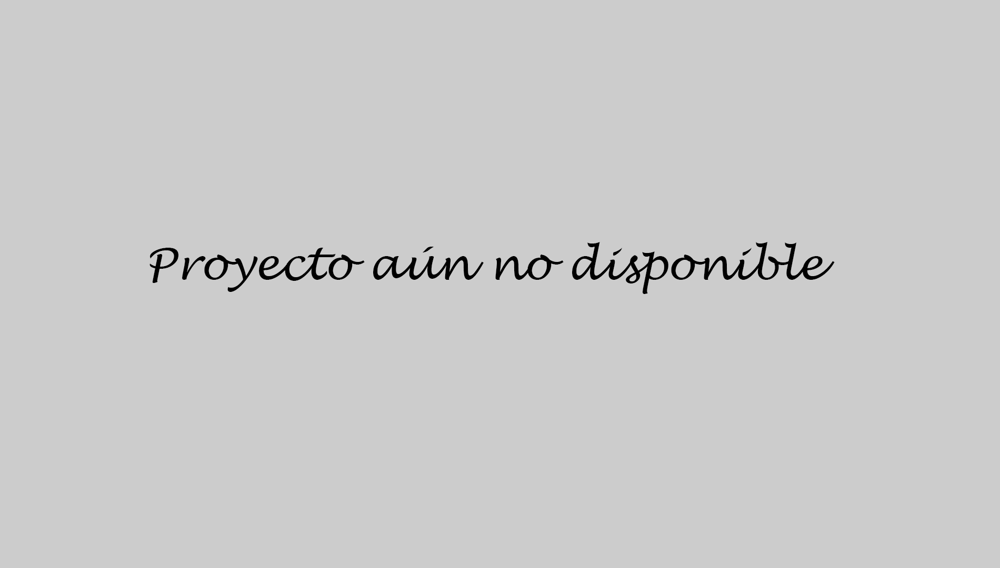

Toggle navigation
Marcos Ludeña Triviño
Formación
Aptitudes
Proyectos
Todos mis proyectos
Aprende a Resolver Problemas - Matemáticas
Trabajo Fin de Grado
Contacto
Trabajo Fin de Grado
Próximamente aquí estará disponible la información sobre mi TFG.
